6 Complexidade Textual e suas Tarefas Relacionadas
6.1 Introdução
Ratificando o redigido na subdivisão da obra acima epigrafada, os originadores da composição a seguir com afinco intentam discorrer sobre o significativo tópico da complexidade textual.
Humm... vamos recomeçar...
Neste capítulo, vamos tentar explicar o tema complexidade textual.
Como acabamos de ver, existem várias formas de dizer a mesma coisa, com graus de complexidade bem diferentes. O tema complexidade textual é largamente tratado em estudos do discurso, na educação, na psicolinguística, na linguística cognitiva, na fonoaudiologia, e no processamento de linguagens naturais (PLN). Aqui apresentaremos conceitos e soluções do ponto de vista do PLN.
Mas antes de tudo é importante dizer que a complexidade é sempre relativa, toda vez que falarmos e ouvirmos falar de complexidade, precisamos perguntar: complexo para quem?
Nesse ponto Dubay (2007) resume de forma certeira a definição: “Inteligibilidade é a facilidade de leitura de um texto criada pela escolha de conteúdo, estilo, estruturação e organização que atende ao conhecimento prévio, habilidade de leitura, interesse e motivação da audiência.”
E já que acima aparece o termo inteligibilidade, vamos conversar um pouco sobre isso. Inteligibilidade textual vem da tradução do inglês text readability e às vezes também é traduzida como leiturabilidade; ambos os termos são bem representativos. Nós optamos por usar inteligibilidade pela relação com entender e dominar a língua (ser letrado) versus a habilidade de decodificar o sistema de escrita (ser alfabetizado). O mais importante é evitar o termo legibilidade, pois este está ligado com o que torna um texto fácil de ser lido (e não necessariamente entendido) como, por exemplo o tamanho e tipo da fonte, cor, estruturação em itens, etc. A inteligibilidade é inversamente correlacionada com a complexidade, isto é, quanto mais complexo um texto for, menos inteligível ele será, para o público alvo do texto.
6.2 Complexo para quem?
A complexidade só existe a partir do ponto de vista específico de quem está lendo, não é possível estudá-la sem o sujeito envolvido no processo da leitura. Mesmo em níveis de letramento próximos, pessoas diferentes podem achar o mesmo texto complexo e simples. Isso varia de acordo com o conhecimento de mundo adquirido e armazenado, a experiência, a habilidade de leitura e o grau de interesse no texto (Dubay, 2007). O Indicador de Alfabetismo Funcional (INAF)1 é um ótimo retrato geral dos potenciais leitores adultos do Brasil (IPM, 2018). O levantamento é feito em média a cada dois anos, desde 2001 e classifica a população nos seguintes níveis de letramento:
Analfabeto: Não consegue ler;
Rudimentar: Localiza informações explícitas e literais;
Elementar: Realiza pequenas inferências em textos de tamanho médio;
Intermediário: Consegue interpretar textos e confrontar a moral da história com sua própria opinião ou senso comum;
Proficiente: Interpreta e elabora textos de maior complexidade sem dificuldades.
É importante frisar que essa classificação em cinco níveis pode ser considerada relativamente arbitrária e agrupa internamente diversos níveis de letramento. O próprio INAF até 2011 utilizava apenas quatro níveis (Analfabeto, Rudimentar, Básico e Pleno). Mais um nível foi adicionado ao identificar que, após as ações do governo de combate ao analfabetismo, a maioria das pessoas subiu para o nível básico, porém os níveis superiores permaneceram estáveis. De 2001 a 2018, o nível analfabeto caiu de 12% para 8%, enquanto o nível proficiente se manteve em 12%.
Um ponto de atenção é que apesar de ter alfabetismo explícito no nome, o INAF avalia o nível de letramento (ou literacia) da população. Alfabetização está relacionada ao processo mecânico de reconhecer os grafemas, ligando-os aos fonemas, enquanto letramento é o uso social desse processo. Conforme Soares (1996): “Letramento é o resultado da ação de ensinar ou de aprender a ler e escrever: o estado ou a condição que adquire um grupo social ou um indivíduo como consequência de ter-se apropriado da escrita.”
Outro conceito interessante ligado à habilidade de leitura versus motivação é o estado de fluxo (Csikszentmihalyi, 2008). Aplicando ao contexto da leitura, se o texto for demasiado simples e a habilidade do leitor for alta, a experiência vai se tornar enfadonha. Por outro lado, se a habilidade do leitor for pequena demais para o nível de complexidade ou desafio apresentado, o esforço exigido vai ser bastante desmotivador. O estado de fluxo seria o casamento do nível de dificuldade adequado para o nível de proficiência do leitor.
Por que não ensinar a ler em vez de simplificar um texto?
Esta é uma crítica recorrente e muito importante, logo é bom abordá-la aqui. Concordamos plenamente que é sempre melhor ensinar a ler do que simplificar um dado texto original para que ele seja acessível a uma pessoa com dificuldade de entendimento. Dito isso, são citadas a seguir duas grandes exceções para se utilizar a simplificação:
Tempo versus Acesso. Ensinar a ler exige tempo, enquanto simplificar pode permitir o acesso à informação no momento presente. Isso é uma verdade para a população adulta que possui dificuldades na leitura e, por diversos motivos, menos tempo para investir na própria educação. Além disso, para obter um resultado abrangente o suficiente, o investimento necessário na educação precisa partir do governo. Iniciativas isoladas conseguem bons resultados, mas quantitativamente o acesso à informação é maior simplificando os conteúdos publicados.
Nível ideal de complexidade. Conforme mencionado no tópico anterior, para um estudante em processo de aprendizagem, ser exposto a um texto demasiadamente difícil pode trazer mais prejuízos do que benefícios. A evolução do processo de ensino-aprendizagem pode ser muito mais eficiente se os textos fornecidos aos estudantes apresentarem um nível de desafio adequado.
6.3 Tarefas de PLN relacionadas à complexidade textual
As principais tarefas de PLN diretamente relacionadas com a complexidade textual estão representadas na Figura 6.1 e resumidas a seguir.
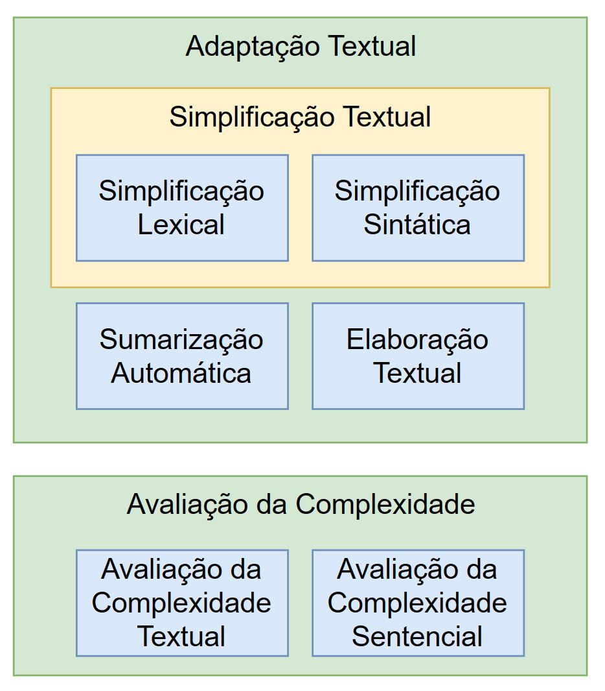
6.3.1 Adaptação textual
A Adaptação Textual é uma área de pesquisa de grande importância dentro da área de PLN, geralmente conectada com práticas educacionais, mas também com aplicações bem diversas como, por exemplo, auxiliar na recuperação de informações biomédicas (Jonnalagadda; Gonzalez, 2010). Ela permite alterar o conteúdo de um texto sem mudar seu significado, na maior parte das vezes. Possui duas grandes abordagens: Simplificação e Elaboração Textual (Aluı́sio; Gasperin, 2010; Burstein, 2009; Hartmann; Aluísio, 2020; Mayer, 1980).
6.3.2 Simplificação textual
A Simplificação Textual consiste no processo de reduzir a complexidade de um texto, enquanto se preserva o conteúdo informativo e significado, tornando o texto mais fácil de ser compreendido por leitores humanos ou ser processado por programas (Carroll et al., 1998; Max, 2006; Shardlow, 2014; Siddharthan, 2006).
Os primeiros avanços na área de simplificação textual automática surgiram com a ideia de dividir sentenças longas em sentenças menores para melhorar os resultados dos analisadores sintáticos (Chandrasekar et al., 1996). Desde os trabalhos iniciais em simplificação textual, a área prosperou, avançando as pesquisas em cenários de aplicação, línguas e métodos.
Tipos de simplificação textual
Arfé et al. (2018) definem o objetivo da simplificação textual como a adaptação da complexidade do texto (ou readability, em inglês) para as habilidades de um determinado grupo de leitores e, desta forma, readability measures (ou medidas de complexidade textual) foram desenvolvidas para alinhar/escolher textos para leitores, pois essas medidas podem predizer o quão difícil um texto será para seus leitores.
Desta relação entre readability e simplificação textual, surgem as abordagens profunda e superficial para readability, culminando nas abordagens cognitiva, temática (ou topical) e linguística para simplificação textual, explicadas abaixo.
Segundo as autoras acima, a abordagem superficial para complexidade textual se baseia no tamanho das palavras e sua frequência e no tamanho das orações para predizer a complexidade literal dos textos, ou seja, a compreensão do significado estrito de uma única proposição. Enquanto que a abordagem profunda, baseada em features como a presença e densidade de marcadores discursivos e correferência no texto, consegue predizer coerência e compreensão no nível inferencial, isto é, a integração entre segmentos de um texto e entre o texto e o conhecimento prévio do leitor.
Abaixo são definidos os três tipos de complexidade – a cognitiva, a linguística (envolvendo os níveis lexical e sintático) e a temática – que levam a três abordagens para simplificação textual, de mesmo nome.
A complexidade cognitiva está relacionada com a capacidade limitada de um leitor de identificar e compreender a estrutura global e local de um texto. A estrutura global é responsável por organizar as informações (ou tópicos) de um texto. As estruturas de textos informativos (jornalísticos, por exemplo) são mais variadas do que textos narrativos, podendo ser uma da seguinte lista: descrição, sequência, comparação e contraste, problema-solução e causa-efeito e, inclusive, aparecer de forma não-exclusiva, dificultando o seu reconhecimento. Essa dificuldade pode impedir um leitor de responder o que é dito no texto e de fazer um resumo dele, por exemplo.
A outra dificuldade se dá no processamento local de um texto, realizado pelo leitor, para conectar sentenças e identificar as suas relações (de contraste, exemplificação, causa, resultado, finalidade, dentre outras). As soluções para essas duas dificuldades são dois conjuntos de simplificações, chamadas de cognitiva no nível global e no nível local. No nível local são usadas para:
Aumentar a coesão via conectivos para explicitamente mostrar a relação entre sentenças;
Utilizar correferência para conectar as ideias.
No nível global, temos simplificações para:
Facilitar a retenção de novo conhecimento aprendido do texto via organização do conteúdo textual, ajudando o leitor a identificar a estrutura do discurso pelo uso de marcadores discursivos (linguísticos e tipográficos);
Organizar fatos e ideias presentes no texto pelo uso de subtítulos/seções que resumem o conteúdo dos parágrafos.
A complexidade temática/conceitual está associada à falta de conhecimento de mundo necessário para entender alguns temas. Existem projetos como o Newsela2 (Xu et al., 2015) que realizam a simplificação conceitual, simplificando os conceitos expressos no texto. Por exemplo, o projeto Newsela inclui elaborações no texto para tornar certos conceitos mais explícitos ou redundâncias para enfatizar partes importantes do texto. Além disso, as operações reduzem e omitem informações que não são adequadas para determinado público-alvo.
Quanto às simplificações linguísticas, temos a lexical e a sintática. A complexidade lexical está relacionada ao desconhecimento do significado de palavras e expressões. A complexidade sintática está relacionada à capacidade ou não de processar alguns tipos de estrutura de sentenças. Na área de PLN, as simplificações linguísticas foram mais exploradas e muitos métodos criados, para várias línguas. Elas são detalhadas nas próximas seções.
6.3.3 Simplificação lexical
A Simplificação Lexical é uma forma de simplificação por meio da substituição de palavras raras ou complexas por hipônimos, hiperônimos ou sinônimos, equivalentes e mais simples, deixando a leitura com compreensão mais fácil para pessoas com baixo letramento (Aluı́sio; Gasperin, 2010), falantes não nativos de uma dada língua (Paetzold; Specia, 2016c), disléxicos e afásicos (Carroll et al., 1998), dentre outros (Boito, 2014). Um exemplo de sentença simplificada lexicalmente pode ser visto no Quadro 6.1.
A simplificação lexical geralmente é realizada com o apoio de dicionários compilados e recursos como WordNet (Fellbaum, 1998; Miller, 1995), de grandes corpora como a Simple Wikipedia (em uma abordagem de ensembles), e também de outras abordagens mais recentes baseadas em word embeddings (Paetzold; Specia, 2016a) e redes neurais para ranking (Paetzold; Specia, 2017).
Quadro 6.1 Exemplo de sentença simplificada lexicalmente
6.3.4 Simplificação sintática
A análise sintática é o estudo da disposição das palavras em uma oração e é dividida em funções sintáticas (sujeito e predicado) e constituintes (sintagmas nominais, verbais, preposicionais, adjetivas e adverbiais) (Candido Junior, 2013).
A Simplificação Sintática consiste em dividir orações longas (como exemplificado no Quadro 6.2) ou alterar a estrutura sintática das orações, eliminando fenômenos sintáticos considerados complexos para a inteligibilidade e compreensão de uma classe de leitores. Ainda segundo Candido Junior (2013), alguns exemplos comuns de fenômenos sintáticos são: reordenação de componentes de uma oração para facilitar a compreensão da informação principal veiculada, mudança de voz passiva para ativa, resolução anafórica de pronomes relativos, reordenação de orações e divisão de orações.
Quadro 6.2 Exemplo de sentença simplificada sintaticamente
Embora haja um compromisso entre simplificação sintática e aumento do texto – é natural que quebrar uma oração longa em várias torne o texto mais longo, pois sujeitos devem ser adicionados, para vários públicos essa é uma adaptação necessária para permitir o entendimento do texto.
A principal ferramenta de simplificação para o português brasileiro foi desenvolvida durante o projeto PorSimples (Aluı́sio; Gasperin, 2010), e é chamada Simplifica (Candido-Junior et al., 2009; Scarton et al., 2010). Ela apoia autores na redação de textos mais simples, auxiliando tanto na simplificação lexical, que foi baseada em listas de palavras simples, quanto na sintática, realizada via regras baseadas no parser Palavras (Bick, 2000). Atualmente, não está disponível no site do NILC, mas sua interface pode ser vista no relatório do projeto3.
Inicialmente, a tarefa era solucionada por meio de regras fixas programadas, porém a abordagem mais recente utiliza modelos de redes neurais recorrentes inspiradas na tarefa de Tradução Automática (Machine Translation), nos quais o texto original é “traduzido” em sua versão simplificada dentro da própria língua, utilizando o conhecimento adquirido com treinamento em grandes corpora (Scarton; Specia, 2018).
6.3.5 Sumarização automática
A Sumarização Automática pode ser definida como a diminuição da extensão dos textos mantendo os conteúdos principais. Ela tem um papel muito importante na simplificação de textos, principalmente para os níveis mais baixos de letramento, nos quais o tamanho do texto já é um fator desestimulante para a leitura. Diversos métodos de sumarização, na abordagem extrativa (na qual o sumário é composto de orações retiradas do texto original, sem alterações), foram avaliados no projeto PorSimples (Margarido et al., 2008) e foi escolhido o método Extração de Palavras-Chave por frequências de Radicais (EPC-R) para ser usado na ferramenta Facilita, desenvolvida no mesmo projeto (Watanabe et al., 2009a, 2009b).
Para mais informações sobre a tarefa de Sumarização, confira o Capítulo Sumarização Automática.
6.3.6 Elaboração textual
A Elaboração Textual visa melhorar a compreensão de um texto e ampliar ou explorar o vocabulário do leitor, adicionando informações como: sinônimos ou antônimos ao lado de palavras ou expressões complexas, definição de conceitos ou ainda tornar explícitas as conexões entre as ideias (Aluı́sio; Gasperin, 2010).
A elaboração lexical, em contraste com a simplificação lexical, não substitui as palavras e sim adiciona uma ou uma lista de palavras para explicar o significado de uma palavra complexa. Também pode inserir uma definição curta conforme exemplificado no Quadro 6.3. Trata-se de uma abordagem adequada em situações como o aprendizado de crianças e de uma segunda língua, pois explica e enriquece o vocabulário do estudante (Hartmann; Aluísio, 2020).
Quadro 6.3 Exemplo de sentença simplificada por elaboração textual
6.4 Avaliação da Complexidade e suas Métricas
As formas de medir automaticamente a complexidade de textos ou sentenças representam por si só uma ampla área de pesquisa, como dito na introdução. A análise automatizada da complexidade de textos, também conhecida em inglês por ARA (Automatic Readability Assessment), tem um viés de aplicação prática, pois ajuda a indicar material de leitura adequado, por exemplo para uma dada série escolar, mas também pode contribuir para um melhor entendimento dos processos de leitura e compreensão em populações com processamento típico e atípico de linguagem.
Graesser et al. (2011) dividem as abordagens de predição e medição da complexidade (ou simplicidade) de textos em:
Tradicionais: que usam uma única métrica ou a combinação linear de poucas métricas de dificuldade;
Modernas: que analisam textos com múltiplas características em vários níveis linguísticos e cognitivos, e foram alavancadas por métodos de AM (aprendizado de máquina) nas últimas duas décadas.
Um exemplo da primeira abordagem é o Índice Flesch que será visto na Subseção Fórmulas clássicas e outro da segunda abordagem é o Coh-Metrix, apresentado na Subseção Métricas Linguísticas.
Um dos grandes desafios para a aplicação dos métodos de AM em textos é a criação de corpora grandes e balanceados, anotados com as classes de interesse, por professores ou linguistas. O aprendizado do modelo usa a conversão dos textos em valores, geralmente numéricos, para serem usados nas fases de treinamento e avaliação dos métodos. Isso geralmente é obtido por meio da extração e seleção de métricas dos textos, em diversos níveis da língua, para em seguida utilizá-las como features nos métodos de aprendizado de máquina.
Há uma crítica frequente a essa abordagem de anotação da complexidade que usa preditores com base em corpus com julgamento de especialistas: o fato de a anotação não ser baseada no desempenho real da leitura de estudantes, por exemplo. Entretanto, se já há grande dificuldade em anotar um grande corpus com avaliação de professores, conseguir um corpus de alunos é mais ainda difícil e demorado (Vajjala; Meurers, 2016). O corpus Touchstone Applied Science Associates (TASA), na língua inglesa, é o único grande corpus disponível que atende essa crítica, no melhor do nosso conhecimento, por ser formado por 37.520 amostras de textos, com o tamanho de um parágrafo de tamanho médio de 288,6 palavras (desvio padrão de 25,4), cujas dificuldades foram avaliadas via tarefa de leitura de estudantes, sendo anotados também com a métrica DRP (Degrees of Reading Power)4 (Graesser et al., 2011). Entretanto, a possibilidade de usar rastreamento ocular para capturar o processo de leitura de estudantes é muito bem-vinda e foi explorada na pesquisa de Leal (2021).
Para facilitar a apresentação, são mostradas nas próximas quatro seções as principais fontes de métricas para a tarefa de predição da complexidade (textual e sentencial): fórmulas clássicas, linguísticas, psicolinguísticas e de rastreamento ocular. Dentro de cada seção são descritas as principais métricas citadas na literatura.
6.4.1 Fórmulas clássicas
As primeiras fórmulas para avaliação de inteligibilidade textual surgiram na década de 1920 nos Estados Unidos, e por volta de 1980 já existiam mais de duzentas fórmulas diferentes (Dubay, 2007).
Mesmo com o advento das abordagens mais modernas para resolver a tarefa, essas fórmulas continuam a ter grande importância para as tarefas de PLN, e são usadas isoladamente ou em conjunto com outras features. As principais para o escopo deste capítulo são detalhadas a seguir. É importante ressaltar que essas fórmulas foram pensadas para a língua inglesa, portanto não devem ser utilizadas diretamente no português, mas já existem adaptações de algumas delas, como no caso do índice Flesch, por exemplo.
Índice Flesch
A fórmula Flesch Reading-Ease Score (FRES), para ser usada com textos em inglês:
\[ \mathrm{F} = 206.835 - 1.015 \left ( \frac{\text{total palavras}}{\text{total sentenças}} \right ) - 84.6 \left ( \frac{\text{total sílabas}}{\text{total palavras}} \right ) \tag{6.1}\]
O valor da fórmula pode ser interpretado com a seguinte escala:
90-100: Muito simples,
80-89: Simples,
70-79: Relativamente simples,
60-69: Padrão,
50-59: Relativamente complexo,
30-49: Complexo,
0-29: Muito complexo.
É uma das mais antigas e utilizadas fórmulas de inteligibilidade e foi criada por Rudolph Flesch em 1948 (Dell’Orletta et al., 2011; Sjöholm, 2012). Foi adaptada para o português brasileiro em 1996 pelo NILC (Martins et al., 1996), adicionando 42 pontos a todos os escores da fórmula original em inglês:
\[ \mathrm{F} = 248.835 - 1.015 \left ( \frac{\text{total palavras}}{\text{total sentenças}} \right ) - 84.6 \left ( \frac{\text{total sílabas}}{\text{total palavras}} \right ) \tag{6.2}\]
Flesch-Kincaid grade level
A fórmula Flesch–Kincaid Grade Level apresenta como resultado um número que corresponde a uma série no sistema educacional americano, facilitando a avaliação do nível de complexidade de livros e textos. Pode ser interpretada como o número de anos de educação necessários para a leitura de um dado texto:
\[ \mathrm{FK} = 0.39 \left ( \frac{\text{total palavras}}{\text{total sentenças}} \right ) + 11.8 \left ( \frac{\text{total sílabas}}{\text{total palavras}} \right ) - 15.59 \tag{6.3}\]
Foi desenvolvida por J. Peter Kincaid em 1975 (Kincaid et al., 1975) a partir da anterior criada por Rudolph Flesch. É também uma função linear que utiliza a média de sílabas por palavras e média de palavras por sentença, estimando assim as complexidades lexical e sintática do texto (Dell’Orletta et al., 2011; Sjöholm, 2012).
Dale-Chall
Inspirada pela fórmula Flesch, a fórmula Dale-Chall acrescenta validação da dificuldade das palavras contra um dicionário com 3 mil palavras simples, sendo também considerada a média do tamanho das sentenças:
\[ \mathrm{DC} = 0.1579 \left ( \frac{\text{total palavras difíceis}}{\text{total palavras}} \times 100 \right ) + 0.0496 \left ( \frac{\text{total palavras}}{\text{total sentenças}} \right ) \tag{6.4}\]
Foi criada em 1948 e atualizada posteriormente em 1995 por Edgard Dale e Jeanne Chall (Chall; Dale, 1995; Dell’Orletta et al., 2011).
Gunning Fog Index
Gunning Fog Index ou simplesmente FOG Index foi criada em 1952 por Robert Gunning:
\[ \mathrm{GF} = 0.4 \left [ \left ( \frac{\text{total palavras}}{\text{total sentenças}} \right ) + 100 \left ( \frac{\text{total palavras complexas}}{\text{total palavras}} \right ) \right ] \tag{6.5}\]
Ao avaliar a dificuldade de inteligibilidade dos jornais por estudantes de graduação, ele escreveu que os textos estavam repletos de incertezas, névoa (fog em inglês) e complexidade desnecessária (Dubay, 2014). Palavras complexas nesse contexto são as que possuem três ou mais sílabas.
Coleman–Liau
Baseada em caracteres em vez de sílabas por palavra, possibilita utilizações mais mecânicas em textos:
\[ \mathrm{CLI} = 0.0588 \times \mathrm{L} - 0.296 \times \mathrm{S} - 15.8 \tag{6.6}\]
Na fórmula acima, \(\mathrm{L}\) é a média da quantidade de letras por 100 palavras e \(\mathrm{S}\) é a média do número de sentenças por 100 palavras (Coleman; Liau, 1975).
Brunét
O Índice de Brunét é uma variação da TTR (Type Token Ratio), mas insensível ao tamanho do texto:
\[ \mathrm{W} = \mathrm{N}^{\mathrm{V}^{-0.165}} \tag{6.7}\]
Na fórmula acima \(\mathrm{N}\) é o número de tokens e \(\mathrm{V}\) é o total de palavras do vocabulário (ou types). Foi criado por Étienne Brunet em 1978 (Cunha, 2015; Thomas et al., 2005). Os valores típicos da métrica variam entre 10 e 20, sendo que uma fala mais rica produz valores menores.
Honoré
A Estatística de Honoré é outra variação da TTR, também insensível ao tamanho do texto:
\[ \mathrm{R} = \frac{100log\mathrm{N}}{1-\frac{V_{1}}{V}} \tag{6.8}\]
Na fórmula acima \(\mathrm{N}\) é o número de tokens e \(\mathrm{V_{1}}\) é o número de palavras do vocabulário que aparecem uma única vez e \(\mathrm{V}\) é o número de itens lexicais (ou types). Foi criada por A. Honoré em 1979 (Cunha, 2015; Thomas et al., 2005), sendo que valores altos da fórmula indicam um vocabulário rico.
6.4.1.1 ALT - Análise de Legibilidade Textual
Com a devida ressalva já feita na introdução sobre o termo legibilidade, o ALT5 (Moreno et al., 2022) é uma ferramenta recente bem interessante e publicamente disponível que traz a implementação das fórmulas vistas nesta seção com uma representação visual bem moderna. Na Figura 6.2 podemos ver o resultado da análise para um texto simples.
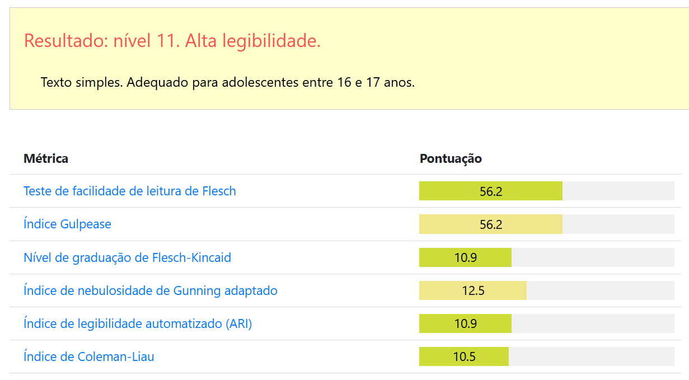
6.4.2 Métricas Linguísticas
As métricas linguísticas extraem características nos níveis lexical, morfossintático, sintático, semântico e discursivo da língua. Existem ferramentas com esse fim específico, que facilitam bastante o processo. Trazemos nas seções seguintes, um resumo de seis ferramentas, tanto para o inglês como para o português.
Coh-Metrix
O Coh-Metrix6 (McNamara et al., 2014) é uma ferramenta desenvolvida para a língua inglesa, que extrai de um texto métricas de coesão e coerência, permitindo avaliar a complexidade da sua leitura.
Os autores definem coesão como a relação entre as características do texto que guiam o leitor para a representação mental do significado, e coerência é a representação mental que o leitor cria durante a leitura (Graesser et al., 2004).
A versão 3.0 do Coh-Metrix implementa 106 métricas para a língua inglesa, agrupadas nas 11 categorias: Descriptive, Text Easability Principal Component Scores, Referential Cohesion,Latent Semantic Analysis* (LSA), Lexical Diversity, Connectives, Situation Model, Syntactic Complexity, Syntactic Pattern Density, Word Information e Readability*.
A tela da ferramenta pode ser vista na Figura 6.3), que traz no lado direito os valores de diversas métricas do pequeno texto informado no lado esquerdo.
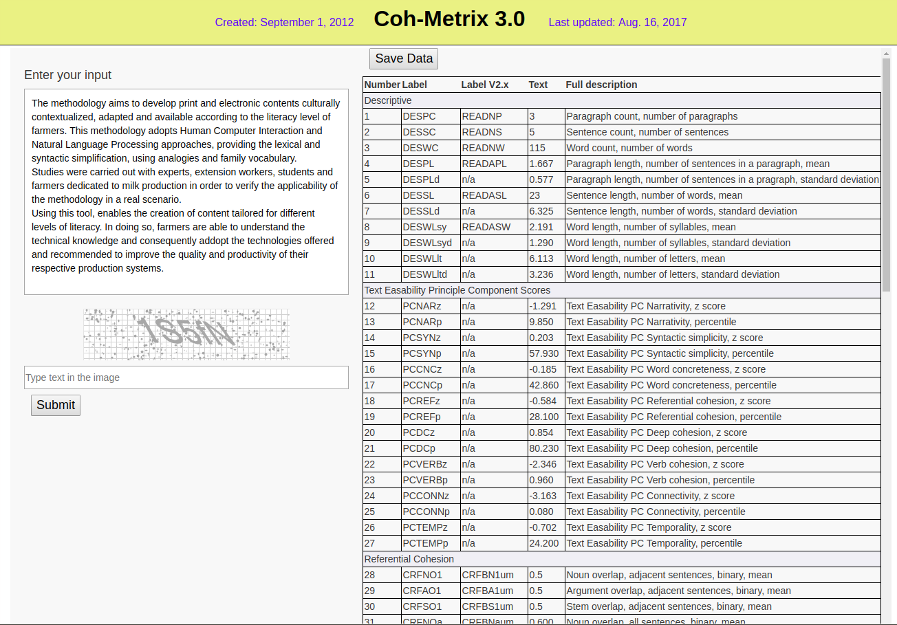
Em contraste com as fórmulas clássicas que analisam o texto apenas no nível das palavras e sentenças e geram um único valor para quantificar a complexidade do texto, o Coh-Metrix utiliza uma análise multinível, alinhada com teorias de compreensão textual (Graesser et al., 2011):
Words: Como o conhecimento do vocabulário de uma língua tem um grande impacto sobre o tempo de leitura e compreensão, Coh-Metrix tem uma grande quantidade de métricas relacionadas a palavras, incluindo: análise de categorias gramaticais ou Part of Speech (PoS), frequência, medidas psicolinguísticas como concretude, familiaridade, idade de aquisição, imageabilidade, categorias semânticas obtidas da WordNet de Princeton7;
Syntax: Algumas sentenças do discurso oral são curtas, apresentam poucas orações relativas, poucas palavras nos sintagmas nominais e se apresentam na voz ativa, mas sentenças de textos escritos geralmente aparecem de forma oposta, demandando mais processamento da memória de trabalho. Coh-Metrix computa essas contagens e outras como similaridade de pares de sentenças adjacentes, que facilitam a leitura e compreensão;
Textbase: A base textual está relacionada com o significado em vez da análise de palavras e da sintaxe. A correferência é um mecanismo importante para conectar as proposições, as orações e sentenças na base textual, assim Coh-Metrix traz várias métricas para o cômputo da correferência como a sobreposição de palavras de conteúdo, de substantivos e de radicais (content word overlap, noun overlap, e stem overlap, respectivamente). A diversidade lexical está relacionada com a coesão porque um número elevado de palavras diferentes em um texto significa que as palavras novas precisam ser integradas no contexto do discurso. Coh-Metrix também computa várias métricas relacionadas com o modelo estatístico para cálculo de similaridade chamado Latent Semantic Analysis (LSA), pois ele ajuda a medir o conhecimento implícito do leitor em adição às palavras explícitas usadas no texto;
Situation Model / Mental Model: Textos narrativos incluem pessoas, objetos, ações, eventos, processos, planos e outros detalhes de uma estória, já em textos informativos o modelo mental é diferente, pois devem ajudar a entender como modelos da física, biologia e outras ciências funcionam. Assim, há métricas para avaliar se há quebras no entendimento desses modelos mentais que emergem de um texto;
Genre and Rhetorical Structure: Exemplos de uma tipologia de gêneros são: narrativo, expositivo, persuasivo ou descritivo. Textos narrativos são mais fáceis de se ler, compreender e relembrar do que textos informativos. Coh-Metrix analisa se um texto pode ser classificado como narrativo ou informativo, via uma métrica chamada narratividade.
T.E.R.A
T.E.R.A.8 (Text Ease and Readability Assessor) é uma ferramenta construída pelos mesmos autores do Coh-Metrix, também para língua inglesa. Utiliza o Coh-Metrix para avaliar amostras dos textos, reduzindo as métricas em cinco fatores, levantados via PCA (Principal Component Analysis) ((Graesser et al., 2011; McNamara et al., 2013)): Narrativity, Syntactic Simplicity, Word Concreteness, Referential Cohesion (Textbase) e Deep Cohesion (Situation Model). Na Figura 6.4 é possível ver um exemplo da análise do texto com as cinco dimensões.
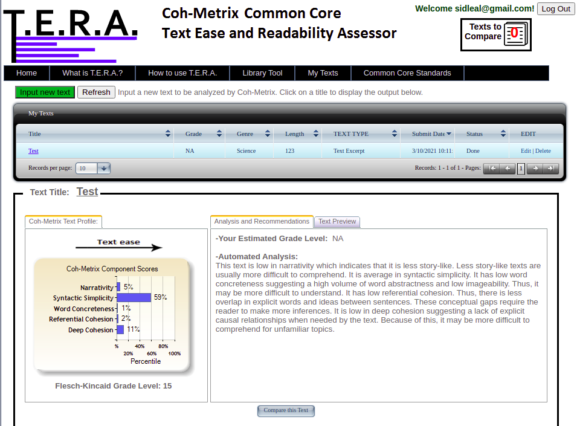
Coh-Metrix-Port
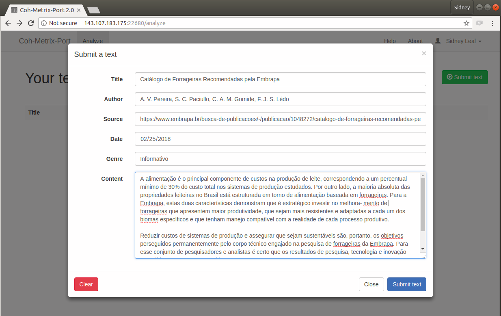
O Coh-Metrix-Port9 (Scarton; Aluísio, 2010) é uma adaptação para o português brasileiro do Coh-Metrix, desenvolvida dentro do projeto PorSimples (Simplificação Textual do Português para Inclusão e Acessibilidade Digital), que teve como objetivo promover o acesso a textos da Web a pessoas com baixo letramento.
O Coh-Metrix-Port implementa 48 métricas específicas para o português brasileiro (Scarton et al., 2010), divididas nas categorias: contagens básicas, operadores lógicos, frequências, hiperônimos, tokens, constituintes, conectivos, ambiguidade, correferência e anáforas. A tela de cadastro dos textos, da versão 2.010, pode ser vista na Figura 6.5.
Coh-Metrix-Dementia
O Coh-Metrix-Dementia11 (Cunha, 2015) é uma adaptação do Coh-Metrix-Port para análise automática de distúrbios de linguagem nas demências (como Doença de Alzheimer) ou no Comprometimento Cognitivo Leve (CCL).
Ele adiciona 25 novas métricas às 48 do Coh-Metrix-Port, nas categorias: disfluências, análise de semântica latente, diversidade lexical, complexidade sintática e densidade semântica.
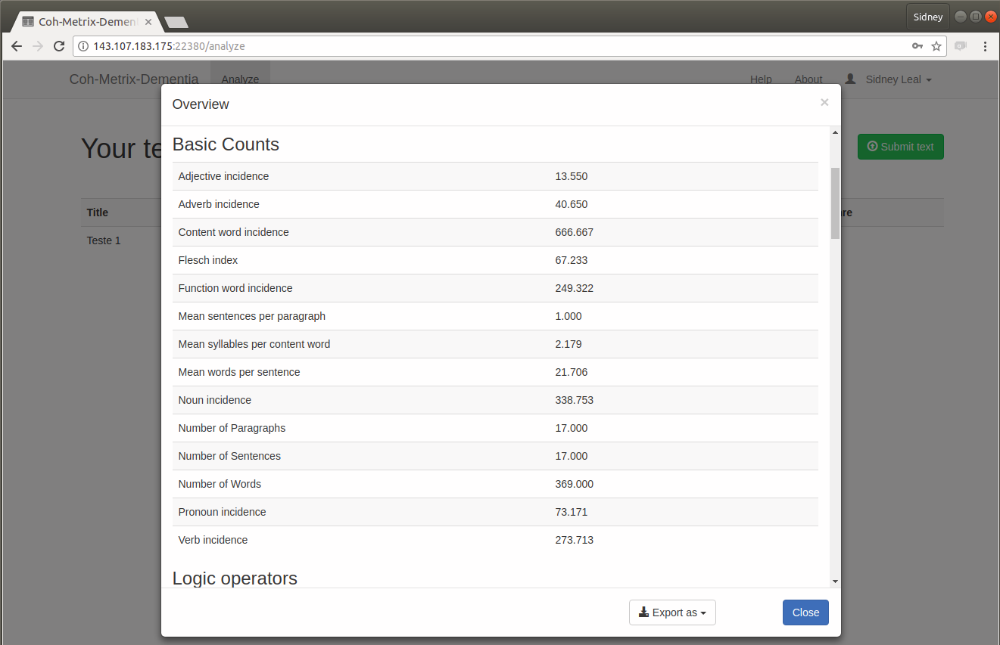
Disponibiliza no total 73 métricas para o português brasileiro. Sua tela principal pode ser vista na Figura 6.6.
LIWC
LIWC (Linguistic Inquiry and Word Count) é uma ferramenta baseada em dicionários para análise dos vários componentes emocionais, cognitivos e linguísticos em amostras de textos (Pennebaker et al., 2015), com categorias como: estatísticas comuns do texto, dimensão linguística, processos psicológicos, relatividade, assuntos pessoais e miscelânea, totalizando aproximadamente 100 métricas (Cunha, 2015).
A sua primeira versão foi criada em 1993, a segunda em 2001, a terceira em 2007 e a última em 2015. O dicionário da versão inglesa conta com 6400 palavras, radicais e emoticons (Pennebaker et al., 2015).
A tradução e adaptação do dicionário para o português brasileiro foi realizada em uma colaboração entre NILC, Checon Pesquisa e Unisinos no período de 2010 a 2012 e está disponível no site do projeto PortLex12.
AIC
Também criada dentro do contexto do PorSimples (Maziero et al., 2008), a ferramenta AIC (Análise Automática de Inteligibilidade de Corpus) traz 39 métricas, com o principal diferencial de utilizar o analisador sintático PALAVRAS (Bick, 2000) para o cálculo delas. Elas estão organizadas em seis classes: estatísticas do texto, voz passiva, características das orações, densidade, personalização e marcadores discursivos (Cunha, 2015; Reis, 2017). A tela de saída pode ser vista na Figura 6.7.
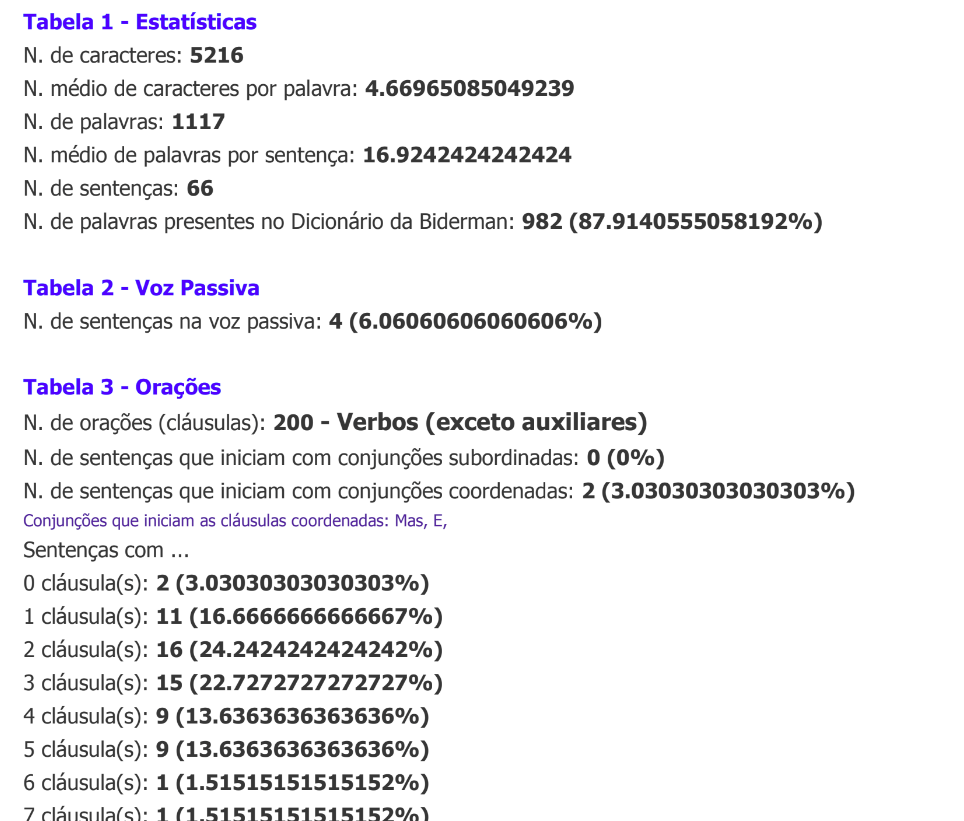
Fonte: (Maziero et al., 2008)
6.4.3 Métricas Psicolinguísticas
As palavras possuem algumas propriedades subjetivas estudadas pela psicolinguística como: imageabilidade, concretude, familiaridade e idade de aquisição (Santos et al., 2017), detalhadas abaixo:
Imageabilidade: Envolve a facilidade e rapidez de evocar uma imagem mental da palavra.
Concretude: É o grau com que uma palavra se refere a objetos, pessoas, lugares ou coisas que podem ser percebidas pelos sentidos, em contraste com os conceitos abstratos.
Familiaridade: É o grau com que as pessoas conhecem e usam palavras no dia a dia.
Idade de Aquisição: Estimativa da idade em que uma palavra foi aprendida, calculada via análise feita por adultos.
Essas propriedades têm um grande impacto na complexidade dos textos e sentenças, e trazem melhorias aos resultados de várias tarefas de PLN, como simplificação lexical e tarefas de classificação semântica quando utilizadas em conjunto com as demais métricas (Paetzold; Specia, 2016b).
Santos et al. (2017) anotaram automaticamente essas métricas em um banco13 de 26.874 palavras do português brasileiro utilizando um método baseado em regressão e Multi-View Learning, com recursos fáceis de se obter em várias línguas.
6.4.4 NILC-Metrix
NILC-Metrix14 é um conjunto de 200 métricas desenvolvido no Centro Interinstitucional de Linguística Computacional – NILC15, do final de 2007 ao início de 2021 (Leal et al., 2023).
O principal objetivo dessas métricas é fornecer subsídios para avaliar a coesão, a coerência e a complexidade textual. O NILC-Metrix pode ajudar pesquisadores a investigar várias questões de pesquisa, por exemplo:
como as características do texto se correlacionam com a compreensão da leitura;
quais são as características mais desafiadoras de um determinado texto, ou seja, quais características tornam um texto ou corpus mais complexo;
quais textos possuem as características mais adequadas para desenvolver as habilidades dos alunos-alvo;
quais partes de um texto são desproporcionalmente complexas e devem ser simplificadas para atender a um determinado público.
Além de ser disponibilizado via interface web, o código fonte também foi disponibilizado sob licença AGPLv316, facilitando a incorporação do código das métricas em aplicações. As métricas são agrupadas em 14 categorias, seguindo sua similaridade e fundamentação teórica. São elas:
Medidas Descritivas (10 métricas)
Simplicidade Textual (8 métricas)
Coesão Referencial (9 métricas)
Coesão Semântica via LSA (11 métricas)
Medidas Psicolinguísticas (24 métricas)
Diversidade Lexical (15 métricas)
Conectivos (12 métricas)
Léxico Temporal (12 métricas)
Complexidade Sintática (27 métricas)
Densidade de Padrões Sintáticos (4 métricas)
Informações Morfossintáticas de Palavras (11 métricas)
Informações Semânticas de Palavras (11 métricas)
Frequência de Palavras (10 métricas)
Índices de Leiturabilidade (5 métricas)
6.4.5 Rastreamento ocular
As métricas do rastreamento ocular trazem uma abordagem recente e diferente das métricas mostradas anteriormente. Sua contribuição é bastante relevante, uma vez que permitem uma aproximação da percepção mais realista da complexidade pelos leitores. Elas foram fundamentais no trabalho de avaliação da complexidade no nível sentencial para o português brasileiro (Leal et al., 2020).
Os movimentos dos olhos podem ser interpretados como uma janela para o processamento do cérebro, refletindo os tempos cognitivos envolvidos em determinada tarefa. Por exemplo, durante a leitura os movimentos dos olhos são controlados por uma complexa interação entre os fatores de baixo nível (por exemplo, o quanto o olho consegue ver e interpretar a cada fixação) e de alto nível (por exemplo, o processamento sintático) (Barrett et al., 2015).
Rayner (1998) divide a pesquisa sobre os movimentos dos olhos (ou rastreamento ocular) em três grandes eras. A primeira era vai desde as primeiras observações sobre os movimentos dos olhos durante a leitura em 1879 até os anos 1920. Algumas importantes descobertas foram feitas nessa era como, por exemplo, o fato de que não percebemos nenhuma informação durante o reposicionamento do olhar, denominado sacada ou saccade, em inglês.
A segunda era coincide com o movimento behaviorista na psicologia experimental, com os trabalhos com focos mais práticos – estudos dos movimentos dos olhos em si ou em aspectos superficiais da tarefa investigada – e menos concentrados na utilização dos movimentos para inferir o processamento cognitivo.
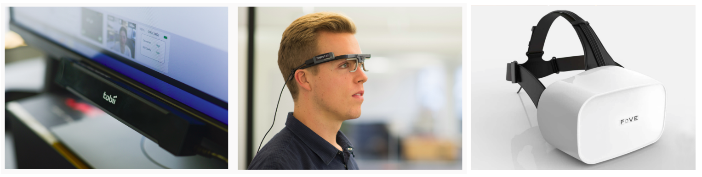
Fonte: (Fove, 2018; Imotions, 2017)
A terceira era começa em meados dos anos 1970, com melhorias nos sistemas de rastreamento que permitiram medidas mais acuradas e simples de obter (Figura 6.8). Nessa era, juntamente com os avanços das teorias de processamento da linguagem, os movimentos dos olhos começaram a ser utilizados para exame crítico dos processos cognitivos durante a leitura.
No português brasileiro, o rastreamento ocular já é utilizado há algum tempo na área da psicolinguística. Por exemplo, Maia et al. (2007) utilizaram para investigar o papel do processamento morfológico na identificação de palavras, Leitão et al. (2012) utilizaram na investigação do processamento anafórico e Teixeira et al. (2014) para evidenciar o custo de resolução de pronomes nulos e plenos.
As características básicas dos movimentos dos olhos são:
Sacadas (Saccades em inglês): Os contínuos movimentos oculares, o reposicionamento do olhar (durante uma sacada nenhuma informação é percebida).
Fixações (Fixations em inglês): Os tempos de fixação em um ponto de atenção entre as sacadas.
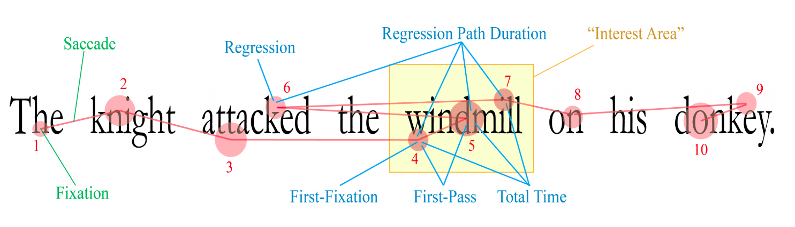
Fonte: (Zelenina, 2015)
A partir dessas duas características é possível medir diversas outras informações relevantes para o processo de leitura e interpretação de textos. As principais métricas obtidas pelo movimento dos olhos são exemplificadas na 8, com a simulação do caminho feito pelo olhar em dez fixações numeradas sequencialmente, e detalhadas a seguir:
First fixation duration: Tempo da primeira fixação na palavra.
First pass fixation duration: Quando uma palavra é longa, pode ser necessário um segundo ponto de fixação dentro da própria palavra. Essa métrica é a soma dos tempos das fixações na primeira passada pela palavra.
Total fixation duration: Soma de todos os tempos de fixação na palavra.
Average fixation duration: Tempo médio de fixação, quando se tem mais de um ponto por palavra ou média por sentença.
Regression: Regressões no texto podem indicar necessidade de rever alguma informação para entendimento do ponto atual, por exemplo, para resolver uma correferência. É uma métrica muito importante para medir a complexidade textual e sentencial.
Regression path duration: Mede a extensão da regressão; quanto maior a regressão, maior o esforço despendido para a leitura, como resultado de um texto mais complexo.
Interest area: Pontos de interesse, onde o leitor passou mais tempo fixando no texto. Calculado com a soma de todas as fixações.
Skipping rate: Algumas palavras são naturalmente saltadas durante a leitura, como artigos e preposições. Não saltar essas palavras pode indicar um leitor com menor proficiência na leitura.
Number of fixations: Quantidade de fixações na palavra; uma palavra simples só deve exigir uma única fixação.
Second pass fixation duration: Tempo de fixação na segunda vez que o leitor retorna à palavra.
Spillover from previous word: Nem sempre o processamento de uma palavra é completado antes que o olhar se mova para a próxima. Nesses casos ocorre o efeito de “transbordamento” do tempo para a palavra seguinte.
6.5 Recursos para Complexidade Textual e Sentencial no Português Brasileiro
Até onde foi possível verificar, existem poucos recursos disponíveis publicamente para as tarefas de complexidade no nível textual e sentencial para o português brasileiro. A seguir são apresentados resumos dos recursos e links para download, sempre que possível.
6.5.1 Recursos para Complexidade Textual
Nesta seção, consideramos os recursos com textos para a tarefa. O PorSimples traz textos simplificados em dois níveis, o RastrOS disponibiliza dados de rastreamento ocular em textos curtos e os corpora do projeto PorPopular são compilações representativas do português popular em jornais como o Diário Gaúcho17 e Massa18.
PorSimples
Corpus paralelo de textos originais e simplificados criado em 2009 no projeto PorSimples19 (Simplificação Textual do Português para Inclusão e Acessibilidade Digital) do NILC ((Caseli et al., 2009)).
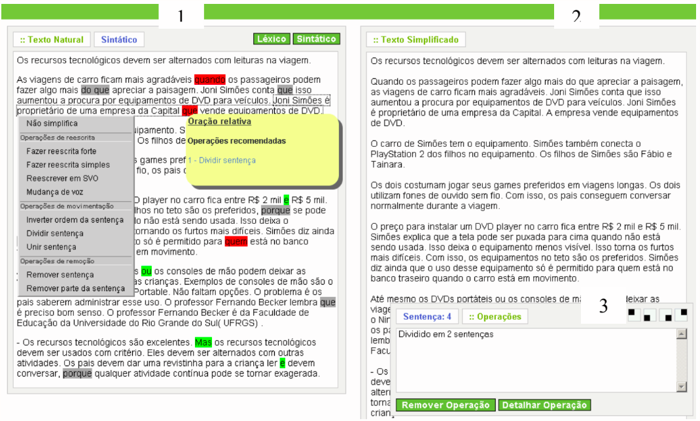
Fonte: (Caseli et al., 2009)
Um editor20 foi desenvolvido para a tarefa de anotação, cuja tela principal pode ser vista na Figura 6.10. No lado esquerdo, fica o texto original e à direita, sua versão simplificada. Os textos jornalísticos foram simplificados em dois níveis por especialistas linguistas:
Natural: textos para os quais o anotador escolheu livremente as operações de simplificação, inclusive podendo escolher não simplificar uma sentença.
Forte: Anotadores seguiram o manual de simplificação também desenvolvido no projeto.
A primeira fase do corpus foi criada a partir de 104 textos do jornal Zero Hora. Na segunda fase, foram adicionados 50 textos do Caderno de Ciência do jornal Folha de São Paulo21, resultando em 154 trios alinhados, com o total de 462 textos e mais de 185 mil tokens.
Na Tabela 6.1 podem ser vistos os números de sentenças de cada nível, e para os tokens confira a Tabela 6.2. Uma característica importante do corpus PorSimples foi a anotação dos fenômenos linguísticos nas sentenças; uma extração deles pode ser vista para cada nível na Tabela 6.3. Com essa informação é possível verificar que alguns fenômenos adicionam mais complexidade que outros, por exemplo, as orações apositivas foram as que mais diminuíram em número durante o processo de simplificação, já as subordinadas contraintuitivamente aumentaram nos níveis mais simples.
| Total | Mínimo/Texto | Máximo/Texto | Média/Texto | |
|---|---|---|---|---|
| Original | 2.985 | 5 | 46 | 19 |
| Natural | 4.080 | 5 | 62 | 26 |
| Forte | 4.974 | 7 | 72 | 32 |
| Total | Mínimo/Sentença | Máximo/Sentença | Média/Sentença | |
|---|---|---|---|---|
| Original | 61.026 | 2 | 71 | 21 |
| Natural | 61.754 | 2 | 60 | 15 |
| Forte | 63.030 | 2 | 47 | 13 |
| Coordenadas | Subordinadas | Relativas | Passivas | Apositivas | |
|---|---|---|---|---|---|
| Original | 1.443 | 805 | 897 | 319 | 306 |
| Natural | 1.352 | 899 | 759 | 257 | 105 |
| Forte | 1.210 | 876 | 527 | 167 | 73 |
Um ponto muito importante é que esse corpus possui alinhamento no nível sentencial. Esse alinhamento foi utilizado para gerar o corpus PorSimplesSent, detalhado mais adiante.
Corpus de Complexidade Textual para Estágios Escolares do Sistema Educacional Brasileiro
Gazzola et al. (2019) compilaram um grande corpus com textos utilizados em diferentes etapas de ensino do Sistema Educacional Brasileiro. O corpus foi organizado nas quatro etapas utilizadas na Plataforma MEC de Recursos Educacionais Digitais (MEC-RED)22 para classificação nos estágios escolares:
Ensino Fundamental I (primeiro ao quinto ano);
Ensino Fundamental II (sexto ao nono ano);
Ensino Médio;
Ensino Superior.
O corpus está publicamente disponível23 e inclui livros-texto, notícias da seção Para Seu Filho Ler (PSFL) do jornal Zero Hora (que apresenta algumas notícias sobre os mesmos tópicos do jornal, mas escritas para crianças de 8 a 11 anos de idade), Exames do SAEB, Livros Digitais do Wikilivros em Português e Exames do Enem dos anos 2015, 2016 e 2017.
Em números, o corpus disponibiliza 2.067 documentos (min = 300 palavras, max = 596 palavras, média = 448).
CorPop e PorPopular
O CorPop (corpus de referência do português popular escrito do Brasil) foi criado em 2018 por Pasqualini (2018) durante seu doutorado. Ele traz uma compilação bem avaliada de textos selecionados com base no nível de letramento médio dos leitores do país, das seguintes fontes:
Textos do jornalismo popular do Projeto PorPopular (jornal Diário Gaúcho) consumido maciçamente pelas classes C e D;
Textos e autores mais lidos pelos respondentes das últimas edições da pesquisa “Retratos da Leitura no Brasil”;
Coleção “É Só o Começo” (adaptação de clássicos da literatura brasileira para leitores com baixo letramento, realizada por linguistas);
Textos do jornal Boca de Rua24, produzido por pessoas em situação de rua, com baixa escolaridade e baixo letramento;
Textos do Diário da Causa Operária25, imprensa operária brasileira produzida também por pessoas dentro da faixa média de letramento do país.
O corpus possui 684 mil tokens. Está parcialmente disponível publicamente26 (ferramentas e listas de palavras).
Além do CorPop, o projeto PorPopular27 (Finatto, 2012) disponibiliza um corpus com amostras do jornal Diário Gaúcho e outro com amostras do jornal Massa.
MedSimples
A MedSimples28 é uma ferramenta que auxilia na simplificação de textos sobre temas de saúde (Paraguassu et al., 2020). Inicialmente se baseou em terminologias e palavras potencialmente difíceis extraídas de um corpus sobre a doença de Parkinson, depois foram adicionados um corpus sobre oncologia e também a base do CorPop (Villar; Finatto, 2023).
Na ferramenta foi trabalhado o conceito de acessibilidade textual e terminológica, explorado no e-book29 gratuito e publicamente disponível na internet (Finatto; Paraguassu, 2022).
RastrOS
RastrOS30 é um corpus de 50 textos curtos com dados de rastreamento oculares de estudantes universitários durante a leitura silenciosa de parágrafos em português brasileiro. Ele foi criado para a evolução da tarefa de avaliação da complexidade sentencial (Leal et al., 2020, 2022; Vieira, 2020).
Além dos dados de rastreamento ocular de 37 participantes, ele também disponibiliza normas de previsibilidade semântica, obtidas por meio da aplicação de teste cloze com 393 participantes. O RastrOS pode ser obtido integralmente no repositório OSF (Open Science Framework)31.
6.5.2 Recursos para Complexidade Sentencial
Apresentamos a seguir os recursos disponíveis em português brasileiro para as tarefas que envolvem o trabalho com a complexidade no nível das sentenças.
PorSimplesSENT
O PorSimplesSENT é o primeiro corpus para o português brasileiro voltado para as tarefas de complexidade no nível sentencial. Foi compilado por Leal et al. (2018) a partir dos alinhamentos disponibilizados pelo corpus PorSimples.
O corpus está disponível publicamente32 com diversos agrupamentos, de acordo com as decisões de alinhamento das sentenças que sofreram operação de divisão. Os grupos mais importantes são:
PSS1 - Todas as divisões: repete a sentença original para cada sentença resultante da divisão;
PSS2 - Maior divisão: utiliza somente a maior sentença resultante da divisão no alinhamento;
PSS3 - Somente sentenças que não sofreram operação de divisão.
Como exemplo de aplicação, o agrupamento PSS2 foi utilizado por Leal et al. (2019) e Leal et al. (2020) na tarefa de avaliação da complexidade sentencial. As estatísticas do corpus estão listadas na Tabela 6.4.
| Grupos | PSS1 | PSS2 | PSS3 |
|---|---|---|---|
| Original-Natural | 3.535 | 2.372 | 1.543 |
| Natural-Forte | 4.976 | 1.501 | 782 |
| Original-Forte | 2.105 | 1.095 | 275 |
| TOTAL | 10.616 | 4.968 | 2.600 |
6.6 Uso de Modelos de Língua para a Simplificação Textual
Nos últimos anos tivemos uma evolução interessante nas tarefas de PLN com o treinamento de grandes modelos de língua, nessa seção abordamos de forma bem preliminar a utilização desses modelos nas tarefas de avaliação e tratamento da complexidade.
Na primeira versão deste capítulo, fizemos um pequeno experimento utilizando um dos textos do corpus PorSimples. Solicitamos ao Bard da Google33, ao Copilot da Microsoft34 e ao ChatGPT 3.5 da OpenAi35 para simplificar esse texto, e também para explicar as operações de simplificação que foram utilizadas. Um ano depois os modelos evoluíram bastante, repetimos o experimento com o Gemini 2.5 Pro36 e com o ChatGPT 5 Pro37.
Quadro 6.4 Exemplos de simplificação utilizando modelos de língua
Os resultados completos estão disponibilizados no github llm-simplification-experiment38.
O prompt fornecido aos modelos foi: “Simplifique o seguinte texto para que um aluno do quarto ano do ensino fundamental consiga compreender, após a simplificação, forneça passo a passo os detalhes das mudanças e motivos para fazer as adaptações no texto:”, seguido do texto. O texto de teste precisou ser truncado no final do parágrafo anterior antes de completar 2000 caracteres, que é o limite do prompt nas interfaces testadas.
Além das simplificações e explicações dos modelos, deixamos também no github as duas simplificações feitas por humanos do PorSimples, para comparação. Reproduzimos no Quadro 6.4 os três primeiros parágrafos do texto original e a simplificação resultante para fins ilustrativos.
De forma geral todos os modelos testados tiveram resultados satisfatórios na tarefa de simplificação proposta, porém o Copilot optou por não situar o texto geograficamente e temporalmente (Em 1978/No passado), eliminando as entidades nomeadas da cidade onde aconteceu o incidente (Uruguaiana), por exemplo. Esta decisão deixou o resultado um pouco superficial.
O Bard e o ChatGPT 3.5 fizeram duas simplificações diferentes, mas ambas com boa qualidade. De forma interessante, optaram por manter entidades nomeadas diferentes, o Bard manteve o nome do subprefeito, enquanto o ChatGPT manteve o nome da barragem e da estrada.
Nas explicações das operações de simplificação utilizadas (que podem ser conferidas integralmente no link do github disponibilizado), o Bard explicou parágrafo por parágrafo, enquanto o ChatGPT focou nas operações utilizadas. Aqui cabe destacar que o Bard teve uma “alucinação” no momento da explicação e inventou uma operação que não aconteceu realmente.
O ChatGPT 3.5 explicou o termo palometas, usando uma exemplificação: “palometas, que são como piranhas”, incluindo porém uma interpretação discutível, pois o texto original diz que palometas são uma espécie (no sentido biológico) de piranhas.
O GPT 5 Pro mostrou grandes avanços na simplificação, mas ainda mantém a interpretação que “palometas são peixes parecidos com piranhas”. Outro ponto interessante dessa simplificação foi a inclusão de um glossário ao final (que pode ser visto no exemplo completo no github).
O Gemini 2.5 Pro manteve a tendência de resumir bastante, mas acertou que a palometa é um tipo de piranha. O resumo removeu a maioria das entidades nomeadas, mas justificou bem as mudanças.
Com este pequeno experimento, fomos surpreendidos positivamente pelos resultados dos grandes modelos de língua na tarefa de simplificação textual. Porém também ficou claro que ainda é necessária uma revisão humana desses resultados, pelo menos por enquanto.
6.7 A complexidade como parâmetro de descrição da linguagem
Até o presente momento, discutimos diversas aplicações de métricas de complexidade textual, seja como meios de classificar a adequação de um texto a um determinado público (como na fórmula Flesch-Kincaid grade level), seja como uma etapa no processo de adequá-lo ao público-alvo (como na ferramenta Simplifica), seja como forma de diagnóstico de distúrbios ou fatores que afetam a pessoa que produz a linguagem (como no Coh-Metrix-Dementia).
Um aspecto comum a todos esses casos é que o objeto central da nossa exploração é o falante – o indivíduo que utiliza a linguagem natural – e como uma métrica de complexidade pode ser um elemento na construção de tecnologias da linguagem que permitam auxiliar o indivíduo ou acessar informações sobre ele.
Entretanto, elementos externos à pessoa também influenciam a maneira como ela se expressa, como:
a própria estrutura da comunicação humana: o fato de a pessoa querer ser entendida, de que ela tem que pensar e raciocinar enquanto está falando ou escrevendo e de que suas ideias podem mudar no processo;
a língua utilizada: quais estruturas aquela língua oferece para construir a fala ou sua escrita, quais regras e restrições a língua impõe, e que outras línguas poderiam não impor;
a situação em que a pessoa se encontra: as regras e convenções que definem como ela deve adaptar o uso da linguagem a contextos específicos.
Todos estes elementos representam níveis em que a linguagem humana é capaz de variar e sobre os quais agem diferentes forças ou restrições que influenciam a maneira como essa variação ocorre. Além disso, estas variações causam modificações palpáveis na complexidade do texto.
Por isso, podemos pensar na complexidade como um fator ou parâmetro da variação da linguagem que, se examinado, nos permitiria entender melhor o próprio fenômeno da variação linguística.
Ao observarmos, pela lente da complexidade, as dimensões em que a linguagem não varia, podemos deduzir coisas sobre a estrutura básica e comum da linguagem humana, subjacente às múltiplas formas em que essa habilidade se realiza, revelando leis e restrições que agem sobre o fenômeno da comunicação humana como um todo.
Assim, as mesmas métricas de quantificação da complexidade textual que nos permitem desenvolver tantas tecnologias importantes em benefício dos seres humanos, podem, também, nos permitir entender melhor o espaço sobre o qual essas tecnologias são desenvolvidas: a própria linguagem humana. Essa forma de pensar está intimamente ligada a duas áreas das ciências da linguagem: a tipologia e a sociolinguística.
A tipologia é a área do conhecimento que se debruça sobre a comparação estrutural entre as diferentes línguas e como a variação da competência da linguagem humana se dá no nível interlinguístico. A tipologia objetiva mapear e entender quais são os universais da linguagem, comuns a todas as línguas humanas, e modelar quais forças definem como e quais variações são possíveis sobre essa estrutura subjacente (Croft, 2002).
Ela ganhou sua forma moderna, principalmente, após o trabalho do linguista estado-unidense Joseph H. Greenberg (Greenberg, 1966), no qual, ao comparar a estrutura gramatical de dezenas de línguas, ele mapeou um conjunto de universais linguísticos, comuns a todas – ou à maioria – das línguas da sua amostra. A tipologia está intimamente relacionada a uma visão funcionalista ou teleológica da linguagem, que a descreve a partir da sua função comunicativa. Mais recentemente, inclusive, muitos passaram a considerar a tipologia não como uma área da linguística, mas como uma abordagem à linguística, na sua versão fundida ao pensamento funcionalista, constituindo a chamada abordagem tipológico-funcional à linguagem (Croft, 2002).
A sociolinguística, por sua vez, é o ramo das ciências da linguagem interessado em como a linguagem varia e se modifica em diferentes contextos e situações sociais, indo além de como a gramática oficial da língua é definida, e buscando descrever como os diferentes grupos de uma sociedade realizam a língua em diferentes contextos, caracterizando as diversas forças que determinam e influenciam essa variação (Wolfram, 2006).
O estudo dos registros, em especial, é uma linha fortemente conectada à sociolinguística, que busca descrever como a linguagem varia entre registros – definidos aqui como variações da língua em função das características e parâmetros da situação em que ela é produzida (Biber, 2006).
Se a tipologia se debruça sobre a variação linguística no nível interlinguístico, a sociolinguística foca na variação no nível intralinguístico. Como veremos, entretanto, a complexidade parece ser um fenômeno transversal a esses níveis, embaraçando o limite entre essas duas áreas.
6.7.1 Questões sobre a complexidade como parâmetro
Um dos pioneiros do uso da complexidade linguística como parâmetro de variação, no sentido moderno, foi o linguista estado-unidense Charles F. Hockett, que, em (Hockett, 1958), apresentou duas conjecturas, nas quais a complexidade desempenha um papel central como parâmetro de variação: a hipótese da equicomplexidade e a hipótese do trade-off morfossintático:
Hipótese da Equicomplexidade: todas as línguas humanas possuem a mesma capacidade comunicativa e a mesma complexidade geral, mesmo usando de mecanismos distintos para transmitir informações e construir estruturas complexas.
Hipótese do trade-off Morfossintático: quanto mais complexa uma língua é morfologicamente – i.e. quanto mais informação ela transmite através de estruturas internas à palavra – menos complexa ela será sintaticamente – i.e. menos informação ela transmitirá através de estruturas externas às palavras.
Na visão de Hockett, a hipótese do trade-off morfossintático seria o principal mecanismo através do qual as línguas humanas manteriam a equicomplexidade.
Essas conjecturas exerceram um papel essencial no seu tempo, por virem como resposta a concepções prévias da linguagem bastante problemáticas, que caracterizavam as línguas indo-europeias como o pináculo de um dito processo evolutivo de complexidade, em detrimento das manifestações linguísticas de outros povos.
No mesmo compasso, várias outras conjecturas acerca da complexidade linguística, em especial da complexidade textual, foram surgindo após as ideias originais de Hockett, entre elas, podemos mencionar39:
Hipótese da conexão demográfica: a complexidade média da linguagem produzida por uma determinada população refletiria a distribuição de falantes primários e secundários da língua naquela população.
Hipótese da simplificação mediante contato: manifestações linguísticas que surgem do contato entre populações que falam línguas diferentes apresentariam menor complexidade geral, justamente como forma de facilitar a comunicação entre essas populações (McWhorter, 2001).
Hipótese dos fatores geográficos e filogenéticos: línguas com relações de parentesco, ou línguas geograficamente próximas, com interação frequente, apresentariam semelhanças nos seus perfis de complexidade – i.e. na maneira como distribuem sua complexidade em diferentes níveis e estratégias.
Entretanto, a avaliação objetiva dessas conjecturas seria muito difícil sem métricas que permitissem de alguma forma quantificar a complexidade de uma língua ou do produto de uma língua, como uma fala, um texto ou uma sentença. Daí, vários pesquisadores se debruçaram sobre como definir e mensurar a complexidade linguística.
Trabalhos como os de Nichols (1998), McWhorter (2001) e Dahl (2004) foram pioneiros na definição de tais métricas, entretanto suas abordagens usualmente exigiam a anotação manual por especialistas, a partir de grandes amostras textuais ou extensas gramáticas de cada língua.
Contudo, fatores como (i) o desenvolvimento da linguística computacional e do PLN, (ii) o avanço do poder de processamento computacional e (iii) a democratização da internet e o consequente aumento do acesso a textos de mais línguas através de meios digitais, mudaram o cenário de pesquisa, levando à proposição de métricas de complexidade computacionais.
Essas novas métricas trouxeram a vantagem de poderem ser computadas de forma mais rápida e sem tanta dependência da anotação de especialistas, além de permitirem comparação em grande escala de diversas línguas. Com esses avanços, aumentaram as nossas possibilidades científicas do uso da complexidade como um parâmetro de estudo da linguagem, em especial para a análise e verificação das hipóteses como as que listamos nesta seção.
6.7.2 Métricas de Complexidade Baseadas em Compressibilidade
Atualmente, contamos com diversas métricas computacionais de complexidade de linguagem. Muitas das medidas apresentadas anteriormente neste capítulo servem também ao propósito do estudo da complexidade como parâmetro linguístico, da forma que o apresentamos nesta seção.
Entretanto, ainda estaria fora do nosso alcance apresentar aqui todas as métricas existentes e os tantos experimentos e resultados obtidos através delas. Para dar um vislumbre do tipo de resultados e conclusões que podemos obter nessas investigações, apresentaremos brevemente alguns resultados obtidos a partir das métricas baseadas em compressibilidade, uma família de métricas de complexidade textual que tem apresentado resultados bastante interessantes e prototípicos, apesar de serem apenas uma parcela muito pequena do conjunto de métricas que podemos considerar.
As métricas de complexidade baseadas em compressibilidade são um conjunto de métricas de complexidade textual, desenvolvidas em (Juola, 1998), (Juola, 2008) e (Ehret; Szmrecsanyi, 2016). Essas métricas consideram que a complexidade de um texto é a quantidade de informação nele contida. A complexidade em um nível linguístico – como morfológico ou sintático – é, então, a parte da informação total do texto sendo transmitida através das estratégias daquele nível específico.
Para poder acessar a quantidade de informação contida no texto e em cada um dos níveis de interesse, essas métricas utilizam algoritmos de compressão de dados simples, como o gzip. Esses algoritmos são capazes de perceber padrões de recorrência dentro de um conjunto de dados, reduzindo-o a uma quantidade de informação mínima, a partir da qual o arquivo original pode ser reconstruído. As métricas baseadas em compressibilidade tomam, então, o tamanho de um texto comprimido como uma aproximação da quantidade de informação – e, portanto, da complexidade – nele contida.
Para aproximar a quantidade de informação em níveis específicos, realizam-se perturbações automáticas e aleatórias no conteúdo do texto, que visam afetar os padrões e estratégias através dos quais a informação é transmitida no nível de interesse, medindo o impacto gerado na quantidade de informação total do texto.
Quando aplicadas ao mesmo texto traduzido em diferentes línguas – visando verificar a hipótese do trade-off morfossintático – essas métricas nos apresentam resultados bastante interessantes. As Figuras 6.11 e 6.12 mostram uma renderização do trade-off em dois experimentos distintos. O primeiro, realizado em Juola (2008), mostra uma troca clara entre as complexidades sintática e morfológica, como previsto por Hockett, para algumas línguas europeias.
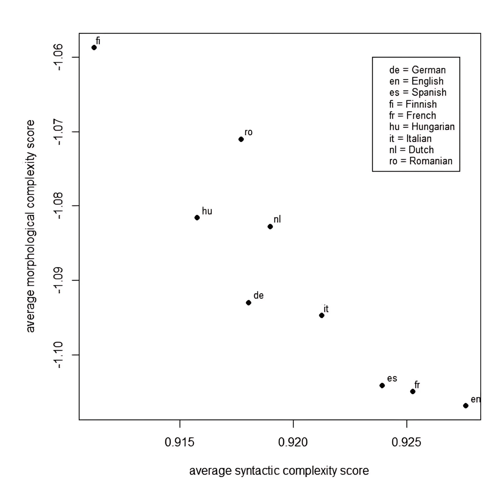
Fonte: (Juola, 2008)
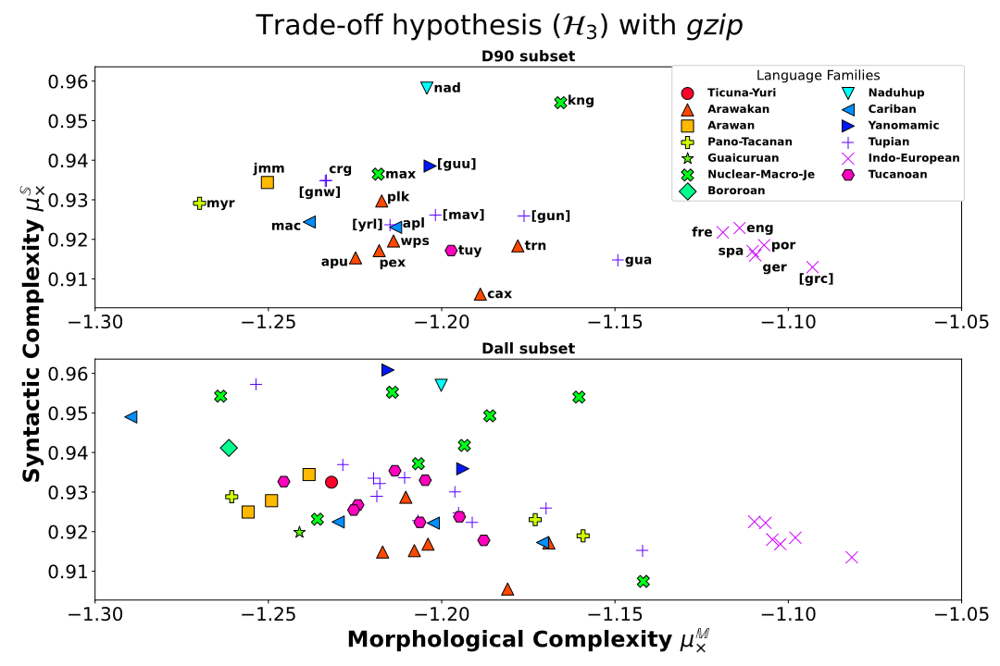
Fonte: (Serras et al., 2024)
Já o gráfico da Figura 6.12, extraído de (Serras et al., 2024), mostra o mesmo trade-off para um conjunto mais amplo, composto majoritariamente de línguas nativas da América do Sul, com algumas línguas europeias de referência. Aqui, também é perceptível uma tendência inversa entre as complexidades sintática e morfológica, entretanto a dispersão é muito maior. Talvez isso possa ser explicado pela grande diversidade filogenética desse conjunto – de fato, é possível perceber que muitos dos dados parecem estar agrupados por semelhança filogenética – o que pode ser lido como um indício da hipótese dos fatores geográficos e filogenéticos, apresentada anteriormente.
Um outro resultado interessante é que, quando as mesmas métricas são computadas sobre conjuntos de textos originários da mesma língua, mas de diferentes registros dentro dessa língua, i.e., sobre textos gerados em situações específicas distintas, observamos o mesmo padrão do trade-off morfossintático. Isso fica claro no gráfico da Figura 6.13, extraído de (Ehret, 2021). Nesse gráfico, vemos o trade-off morfossintático para vários registros ou gêneros distintos da língua inglesa. Também é possível ver uma separação clara entre registros mais e menos oralizados, no que tange ao seu perfil de complexidade.
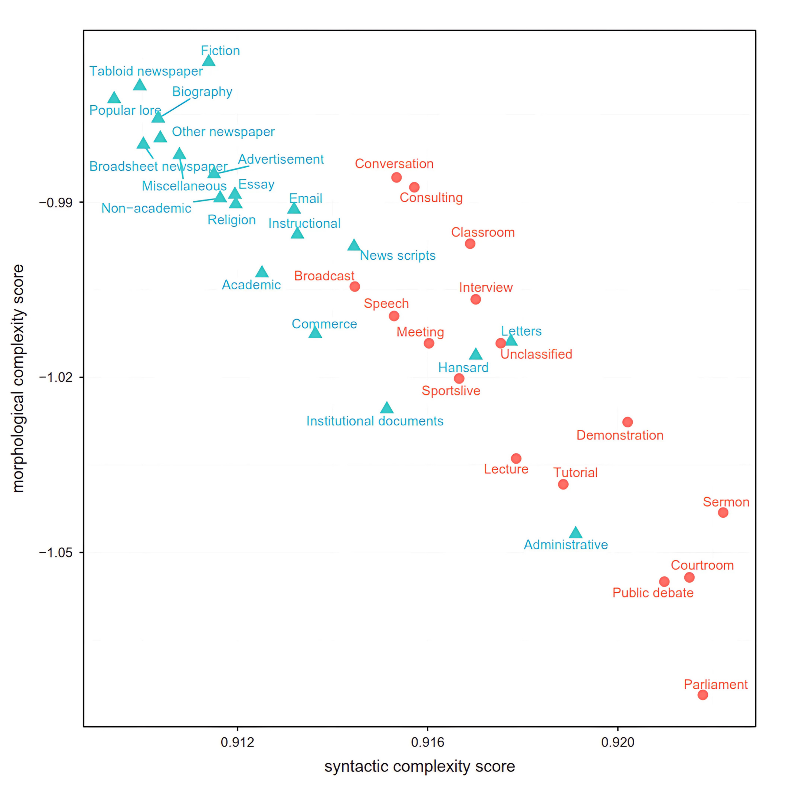
Fonte: (Ehret, 2021)
Apesar de breve, essa comparação de resultados não só nos mostra a robustez dessas métricas, mas a capacidade que a quantificação da complexidade nos traz, ao permitir examinar hipóteses até então de difícil verificação e conectar fenômenos em escopos bastante distintos. Essas conexões talvez permitam que, nos próximos anos, construamos modelos cada vez mais profundos da linguagem e de como ela funciona em diferentes níveis. Talvez, esses novos modelos possam, inclusive, acarretar futuras melhorias nas tecnologias relacionadas à complexidade textual, apresentadas nas seções anteriores deste capítulo.
6.8 Considerações finais
Neste capítulo, apresentamos uma visão geral sobre o tema complexidade textual, começando pelas tarefas relacionadas, passando pelas diversas métricas disponíveis para avaliação automática, pelos recursos disponíveis atualmente para a avaliação das tarefas no português brasileiro e apresentamos também como grandes modelos de linguagem podem ser utilizados para a tarefa de simplificação textual. Por fim, apresentamos como a medição da complexidade textual pode ser usada como parâmetro na construção de modelos sobre a linguagem humana.
Como os grandes modelos de linguagem impactaram em várias tarefas do PLN nos anos recentes, apresentamos também como eles podem ser utilizados para a tarefa de simplificação textual.
Esperamos que esse capítulo sobre a complexidade textual e suas tarefas relacionadas desperte a curiosidade de mais alunos e pesquisadores e contribua de forma positiva para o desenvolvimento da grande área de PLN. Esperamos também que no futuro sejam criadas ferramentas incríveis para adequação dos textos para os leitores, mantendo sempre o nível de desafio adequado para o entendimento e motivação.
https://fapesp.br/publicacoes/microsoft/microsoft_aluisio.pdf↩︎
http://nilc.icmc.usp.br/portlex/index.php/pt/projetos/liwc↩︎
A base está disponível em: http://143.107.183.175:21380/portlex/index.php/en/component/content/article/2-uncategorised/23-psycholinguistic↩︎
Após mais de uma década, o editor continua disponível e funcionando, pode ser utilizado em: http://fw.nilc.icmc.usp.br:23080/↩︎
http://www.nilc.icmc.usp.br/nilc/index.php/tools-and-resources e https://github.com/gazzola/corpus_readability_nlp_portuguese↩︎
https://www.ufrgs.br/textecc/acessibilidade/page/cartilha/↩︎
https://repositorio.ufu.br/bitstream/123456789/35193/1/eClasse_Acessibilidade_Textual.pdf↩︎
http://www.nilc.icmc.usp.br/nilc/index.php/tools-and-resources e https://github.com/sidleal/porsimplessent↩︎
Veja (Ehret et al., 2023) para uma discussão mais aprofundada sobre proposições em aberto.↩︎